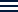

<div class="main-layout h-screen w-screen flex">

 <aside class="hidden md:flex left-wrapper  flex-shrink-0 p-4 " >
   <app-sidebar></app-sidebar>
 </aside>


<!-- right-wrapper   -->
<div class="right-wrapper flex flex-col flex-grow ">

  <div class="navbar flex justify-between items-center  headerbar md:justify-end ">
     <div class="  burger-menu  flex gap-4 items-center md:hidden ">
     <button
      class="p-1 rounded-sm"
     (click)="toggleSidebar()"
     > 
     <!-- burger menu icon  -->
    
    <!--  -->


     </button>
        <span class=" items-center 
        text-bold text-color ">TASKLY </span>

</div> 

    <div class=" ">  <app-navbar [userData]="userData()" /> </div>
  </div>


  <div class="main-content flex-grow overflow-y-auto flex flex-col justify-between  ">
     @if (menuOpened()) {
      <div class="pt-5 pb-2 px-3 h-full">
          <app-sidebar [menuMobileCase]="menuOpened()"/>
      </div>
     
     }
     @else {
       <!-- route all feature [ project / tasks / ...] -->
        <div class="p-1">
            <router-outlet></router-outlet>
        </div>
    
     }
   

     <div class=" md:hidden  ">
      <app-sidebar [footerMobileCase]="true"
             [menuMobileCase]="menuOpened()" />
     </div>
    
  </div>
</div>

</div>


